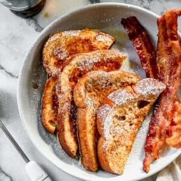

French Toast

Description
If I offered up breakfast options for a family vote, everyone would choose this classic French Toast recipe, served with fresh fruit, syrup and whipped cream! We've been making it for decades, and it's truly the best french toast recipe!.
Ingredients
- 4 large eggs
- 2/3 cup milk (160 ml)
- 1/4 cup all-purpose flour (30 grams)
- 1/4 cup granulated sugar (50 grams)
- 1/4 teaspoon salt
- 1 teaspoon ground cinnamon
- 1 teaspoon vanilla extract (5 ml)
- 8 thick slices bread
Steps
- Preheat griddle to 350 degrees F or or heat a skillet over medium heat.
- In a blender, add the eggs, milk, flour, sugar, salt, cinnamon, and vanilla. Blend until smooth. If you prefer whisking by hand, start by mixing the flour and eggs together in a shallow dish, then whisk in the rest of the ingredients until combined.
- Dip bread slices into the batter, dredging them well on both sides, and place on hot, greased griddle or skillet.
- Cook for a few minutes, until the bottom of the breads starts to get golden brown. Flip and cook on the other side the same.
- Remove to a plate. Serve warm with syrup and a sprinkle of powdered sugar.
Home